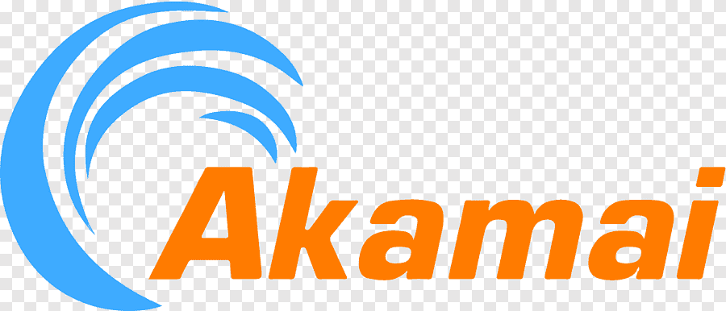
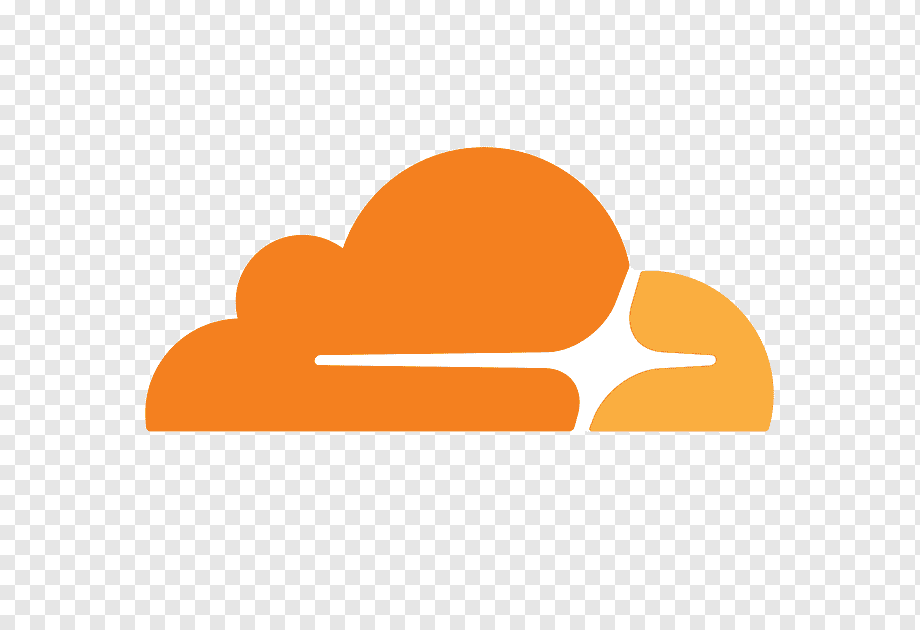

03 / Aplicaciones web
Protege la aplicación en el borde
Un firewall de aplicaciones web filtra solicitudes antes de que lleguen al servidor, pero no
reemplaza parches, autenticación ni una revisión segura del código.

CDN · WAF ·
EdgeAkamai App & API Protector
Combina red de distribución, protección contra bots y reglas para aplicaciones y APIs. Es útil
cuando se necesita absorber tráfico en el borde y aplicar controles antes del origen.
EjemploBloquear una ráfaga de solicitudes al
endpoint de inicio de sesión y permitir el tráfico legítimo con límites por identidad, IP o
comportamiento.

WAF · DDoS ·
Zero TrustCloudflare WAF
Permite aplicar reglas administradas y personalizadas, limitar tasas, filtrar bots y proteger
servicios publicados detrás de su red global.
EjemploCrear una regla que desafíe solicitudes
anómalas a /api/login y registrar el evento sin bloquear de inmediato todo el
país.
WAF · Open
source
ModSecurity + OWASP CRS
Un WAF instalable junto al servidor web que usa el Core Rule Set de OWASP para detectar patrones
como inyección SQL, XSS y traversal.
EjemploComenzar en modo detección, revisar falsos
positivos y pasar a bloqueo sólo después de ajustar las reglas para la aplicación.